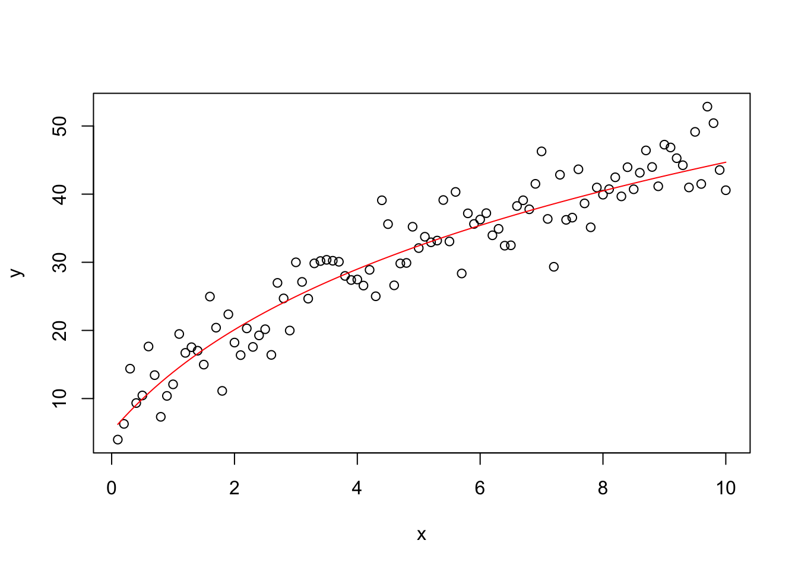
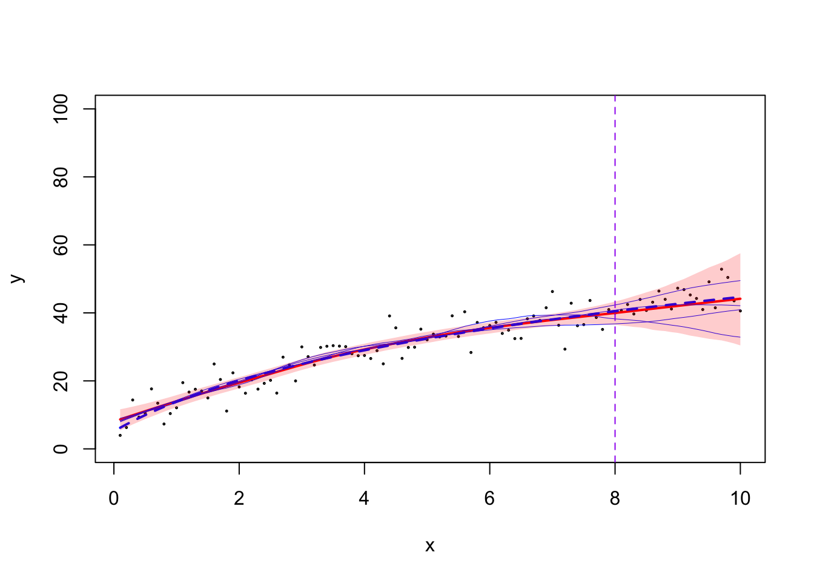
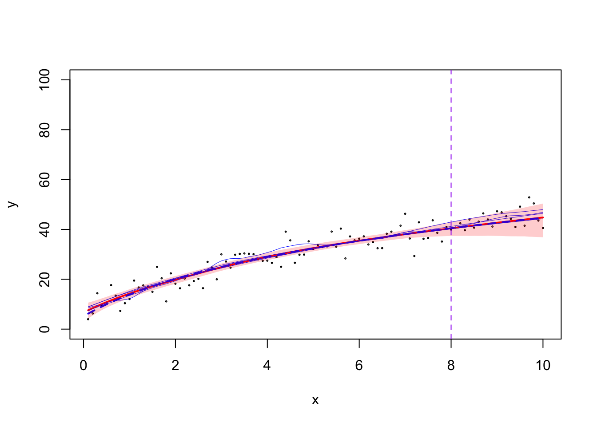
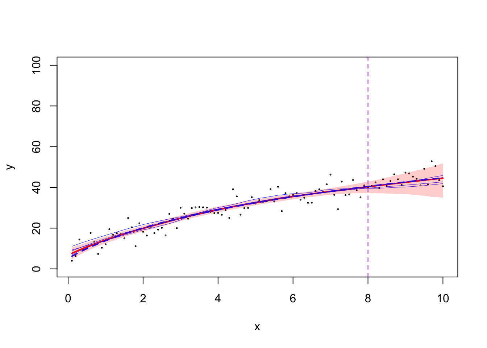

Last updated: 2024-09-12
Checks: 6 1
Knit directory: summary/
This reproducible R Markdown analysis was created with workflowr (version 1.7.1). The Checks tab describes the reproducibility checks that were applied when the results were created. The Past versions tab lists the development history.
The R Markdown is untracked by Git. To know which version of the R
Markdown file created these results, you’ll want to first commit it to
the Git repo. If you’re still working on the analysis, you can ignore
this warning. When you’re finished, you can run
wflow_publish to commit the R Markdown file and build the
HTML.
Great job! The global environment was empty. Objects defined in the global environment can affect the analysis in your R Markdown file in unknown ways. For reproduciblity it’s best to always run the code in an empty environment.
The command set.seed(20240619) was run prior to running
the code in the R Markdown file. Setting a seed ensures that any results
that rely on randomness, e.g. subsampling or permutations, are
reproducible.
Great job! Recording the operating system, R version, and package versions is critical for reproducibility.
Nice! There were no cached chunks for this analysis, so you can be confident that you successfully produced the results during this run.
Great job! Using relative paths to the files within your workflowr project makes it easier to run your code on other machines.
Great! You are using Git for version control. Tracking code development and connecting the code version to the results is critical for reproducibility.
The results in this page were generated with repository version 368fea2. See the Past versions tab to see a history of the changes made to the R Markdown and HTML files.
Note that you need to be careful to ensure that all relevant files for
the analysis have been committed to Git prior to generating the results
(you can use wflow_publish or
wflow_git_commit). workflowr only checks the R Markdown
file, but you know if there are other scripts or data files that it
depends on. Below is the status of the Git repository when the results
were generated:
Ignored files:
Ignored: .DS_Store
Ignored: .RData
Ignored: .Rhistory
Ignored: .Rproj.user/
Ignored: analysis/.DS_Store
Ignored: analysis/.RData
Ignored: analysis/.Rhistory
Ignored: code/.DS_Store
Ignored: code/.Rhistory
Untracked files:
Untracked: analysis/casecross.rmd
Untracked: analysis/illustration.rmd
Untracked: analysis/simulation2.rmd
Untracked: analysis/simulation3.rmd
Untracked: analysis/simulation4.rmd
Untracked: analysis/simulation5.rmd
Untracked: code/fitGP_cc.cpp
Untracked: code/fitGP_cc.o
Untracked: code/fitGP_cc.so
Untracked: data/data_CD3518_sample_2.RData
Untracked: illustration.pdf
Untracked: illustration_iwp2.png
Untracked: illustration_scatterplot.png
Untracked: illustration_tiwp2.png
Untracked: output/Rplot.pdf
Untracked: output/sim1_all_resultB.rda
Untracked: output/sim2_all_resultA.rda
Untracked: output/sim2_all_resultB.rda
Untracked: output/sim5_all_resultA.rda
Untracked: output/sim5_all_resultB.rda
Untracked: output/sim5_coverage_rate_caseA.png
Untracked: output/sim5_coverage_rate_caseB.pdf
Untracked: output/sim5_interval_width_caseA.png
Untracked: output/sim5_interval_width_caseB.pdf
Unstaged changes:
Deleted: Rplot.png
Modified: analysis/simulation1.rmd
Modified: check_psd_tiwp2.R
Deleted: log_Var_plot.png
Modified: output/sim1_all_resultA.rda
Note that any generated files, e.g. HTML, png, CSS, etc., are not included in this status report because it is ok for generated content to have uncommitted changes.
There are no past versions. Publish this analysis with
wflow_publish() to start tracking its development.
In this example, I will illustrate how to fit the tIWP2 or mGP method, induced by different monotone transformations.
Let’s load the relevant functions and libraries that we will be using in this example:
library(tidyverse)── Attaching core tidyverse packages ──────────────────────── tidyverse 2.0.0 ──
✔ dplyr 1.1.3 ✔ readr 2.1.4
✔ forcats 1.0.0 ✔ stringr 1.5.0
✔ ggplot2 3.5.1 ✔ tibble 3.2.1
✔ lubridate 1.9.3 ✔ tidyr 1.3.0
✔ purrr 1.0.2
── Conflicts ────────────────────────────────────────── tidyverse_conflicts() ──
✖ dplyr::filter() masks stats::filter()
✖ dplyr::lag() masks stats::lag()
ℹ Use the conflicted package (<http://conflicted.r-lib.org/>) to force all conflicts to become errorslibrary(Matrix)
Attaching package: 'Matrix'
The following objects are masked from 'package:tidyr':
expand, pack, unpacksource("code/01-state-space.R")
source("code/02-FEM.R")
source("code/03-sampling.R")
TMB::compile("code/fitGP_known_sd.cpp")Note: Using Makevars in /Users/ziangzhang/.R/Makevars using C++ compiler: 'Apple clang version 13.1.6 (clang-1316.0.21.2.5)'
using SDK: 'MacOSX12.3.sdk'[1] 0dyn.load(TMB::dynlib("code/fitGP_known_sd"))First, let’s simulate the following dataset
Simulate some random points:
obs_max <- 8
samp_max <- 10
c <- 1
sd_noise <- 4
n <- 100
set.seed(123)
f <- function(x) (3+4*log(x + c))^1.5
x <- seq(0, samp_max, length.out = (n+1))[-1]
y <- f(x) + rnorm(n, sd = sd_noise)
plot(x, y, ylab = "y", xlab = "x")
lines(x, f(x), col = "red")
To make the experiment a bit more interesting, let’s consider some training and testing separation:
data_sim <- data.frame(x = x, y = y) %>% arrange(x)
data_train <- data_sim %>% filter(x < obs_max)The true function \(f\) is close (but not exactly equal) to some logarithm function.
First, we consider fitting the exact process through their augmented
space representation. The functions that we need for these are sourced
from code/01-state-space.R.
The main functions are mGP_joint_prec and
IWP_joint_prec, which construct the precision matrix for
the mGP and IWP models, respectively. But it is important to keep in
mind that they construct the precision matrix for the augmented space
(including the derivative), so the size will be twice the size of the
original data. For the design matrix, we just need to construct a matrix
that removes the derivative part of the augmented vector.
For now, let’s assume the mGP and tIWP are both induced by the
monotone function \(m(x) =
\sqrt{x+c}\). We define the following three functions
fit_IWP_once, fit_tIWP_once, and
fit_mGP_once to fit the IWP, tIWP, and mGP models,
respectively. The function sample_model_once is used to
sample from the fitted model.
fit_IWP_once <- function(data_sim, data_train, u){
# when m is identity, the tIWP2 and mGP are both equivalent to the IWP2.
m <- function(x) {x}
# construct fixed design matrix (aka boundary condition)
X <- as(cbind(1, m(data_train$x)), "dgCMatrix")
# construct the design matrix
B <- (Diagonal(1, n = 2*nrow(data_sim)))
# take 1,3,5,... (so we don't care about the derivative part)
B <- B[seq(1, 2*nrow(data_sim), by = 2),]
# then take only the first n_train rows:
B <- B[1:nrow(data_train),]
# construct penalty matrix (here the derivarive actually matters)
P <- IWP_joint_prec(t_vec = m(data_sim$x))
logPdet <- determinant(P)$modulus
# fit the model
tmbdat <- list(
y = data_train$y,
X = X,
B = B,
P = P,
logPdet = as.numeric(logPdet),
betaprec = 0.001,
sig = sd_noise,
u = u,
alpha = 0.5
)
tmbparams <- list(
W = c(rep(0, (ncol(X) + ncol(B)))),
theta = 0
)
ff <- TMB::MakeADFun(
data = tmbdat,
parameters = tmbparams,
DLL = "fitGP_known_sd",
random = "W",
silent = TRUE
)
ff$he <- function(w) numDeriv::jacobian(ff$gr, w)
fit <- aghq::marginal_laplace_tmb(ff, k = 4, startingvalue = 0)
return(fit)
}
fit_tIWP_once <- function(data_sim, data_train, u){
# IMPORTANT:
# It is highly suggested to reparametrize m(x) so m(0) = 0 and m'(0) = 1.
# this helps the interpretation of the prior.
m <- function(x) {2*sqrt(c)*(sqrt(x+c) - sqrt(c))}
# construct fixed design matrix (aka boundary condition)
X <- as(cbind(1, m(data_train$x)), "dgCMatrix")
# construct random design matrix
B <- (Diagonal(1, n = 2*nrow(data_sim)))
# take 1,3,5,... (so we don't care about the derivative part)
B <- B[seq(1, 2*nrow(data_sim), by = 2),]
# then take only the first n_train rows:
B <- B[1:nrow(data_train),]
# construct penalty matrix (here the derivarive actually matters)
P <- IWP_joint_prec(t_vec = m(data_sim$x))
logPdet <- determinant(P)$modulus
# fit the model
tmbdat <- list(
y = data_train$y,
X = X,
B = B,
P = P,
logPdet = as.numeric(logPdet),
betaprec = 0.001,
sig = sd_noise,
u = u,
alpha = 0.5
)
tmbparams <- list(
W = c(rep(0, (ncol(X) + ncol(B)))),
theta = 0
)
ff <- TMB::MakeADFun(
data = tmbdat,
parameters = tmbparams,
DLL = "fitGP_known_sd",
random = "W",
silent = TRUE
)
ff$he <- function(w) numDeriv::jacobian(ff$gr, w)
fit <- aghq::marginal_laplace_tmb(ff, k = 4, startingvalue = 0)
return(fit)
}
fit_mGP_once <- function(data_sim, data_train, u){
# IMPORTANT:
# It is highly suggested to reparametrize m(x) so m(0) = 0 and m'(0) = 1.
# this helps the interpretation of the prior.
m <- function(x) {2*sqrt(c)*(sqrt(x+c) - sqrt(c))}
# construct fixed design matrix (aka boundary condition)
X <- as(cbind(1, m(data_train$x)), "dgCMatrix")
# construct random design matrix
B <- (Diagonal(1, n = 2*nrow(data_sim)))
# take 1,3,5,...
B <- B[seq(1, 2*nrow(data_sim), by = 2),]
# then take only the first n_train rows:
B <- B[1:nrow(data_train),]
# construct penalty matrix:
# recall that we want a = 2 for mGP induced by sqrt function.
P <- mGP_joint_prec(t_vec = data_sim$x, a = 2, c = c)
logPdet <- determinant(P)$modulus
# fit the model
tmbdat <- list(
y = data_train$y,
X = X,
B = B,
P = P,
logPdet = as.numeric(logPdet),
betaprec = 0.001,
sig = sd_noise,
u = u,
alpha = 0.5
)
tmbparams <- list(
W = c(rep(0, (ncol(X) + ncol(B)))),
theta = 0
)
ff <- TMB::MakeADFun(
data = tmbdat,
parameters = tmbparams,
DLL = "fitGP_known_sd",
random = "W",
silent = TRUE
)
ff$he <- function(w) numDeriv::jacobian(ff$gr, w)
fit <- aghq::marginal_laplace_tmb(ff, k = 4, startingvalue = 0)
return(fit)
}Once the model is fitted, we can use the following function to take out the sample of the relevant part from the augmented space.
sample_model_once <- function(data_train, data_sim, model_fit, M = 3000, model = "mGP"){
samps <- aghq::sample_marginal(quad = model_fit, M = M)
# take 1,3,5..
f_samps <- samps$samps[seq(1, nrow(data_sim)*2, by = 2),]
beta_samps <- samps$samps[(nrow(data_sim)*2 + 1): (nrow(data_sim)*2 + 2),]
if(model == "mGP"){
m <- function(x) {2*sqrt(c)*(sqrt(x+c) - sqrt(c))}
X_refined <- as(cbind(1, m(data_sim$x)), "dgCMatrix")
}
else if(model == "IWP"){
m <- function(x) {x}
X_refined <- as(cbind(1, m(data_sim$x)), "dgCMatrix")
}
else{
m <- function(x) {2*sqrt(c)*(sqrt(x+c) - sqrt(c))}
X_refined <- as(cbind(1, m(data_sim$x)), "dgCMatrix")
}
f_samps_combined <- f_samps + X_refined %*% beta_samps
f_samps_combined
}For comparison purpose, let’s assume the prior on the PSD \(\sigma_8(2)\) is always an Exponential with median at \(5\).
Fitting the IWP2:
prior_median <- 5
d = 2; p = 2
psd_iwp <- prior_median/sqrt((d^((2 * p) - 1)) / (((2 * p) - 1) * (factorial(p - 1)^2)))
iwp2 <- fit_IWP_once(data_sim, data_train, u = psd_iwp)'as(<matrix>, "dgTMatrix")' is deprecated.
Use 'as(as(as(., "dMatrix"), "generalMatrix"), "TsparseMatrix")' instead.
See help("Deprecated") and help("Matrix-deprecated").samples_iwp2 <- sample_model_once(data_train, data_sim, iwp2, M = 3000, model = "IWP")
iwp_summary <- data.frame(x = data_sim$x, mean = rowMeans(samples_iwp2),
lower = apply(samples_iwp2, 1, quantile, probs = 0.025),
upper = apply(samples_iwp2, 1, quantile, probs = 0.975))Visualize the IWP2:
plot(data_sim$x, data_sim$y, type = "p", col = "black",
lwd = 1, pch = 1, cex = 0.2,
ylim = c(0,100), ylab = "y", xlab = "x",
)
lines(iwp_summary$x, iwp_summary$mean, col = "red", lwd = 2)
lines(iwp_summary$x, f(iwp_summary$x), col = "blue", lwd = 2, lty = 2)
matlines(x = iwp_summary$x, y = samples_iwp2[,2:5], lty = 1, col = "blue", lwd = 0.5)
polygon(c(iwp_summary$x, rev(iwp_summary$x)), c(iwp_summary$lower, rev(iwp_summary$upper)), col = rgb(1, 0, 0, 0.2), border = NA)
abline(v = obs_max, col = "purple", lty = 2)
Fitting the tIWP2:
PSD_tIWP2_compute <- function(h, sd = 1, x){
sqrt(-(sd^2) * 8/3*(((3*h + 8)*x + 4*x^2 + 3*h + 4)*sqrt(h + x + 1) - (h^2 + (5*h + 8)*x + 4*x^2 + 5*h + 4)*sqrt(x + 1))/(sqrt(h + x + 1)*sqrt(x + 1)))
}
psd_tiwp2 <- prior_median/PSD_tIWP2_compute(h = 2, sd = 1, x = 8)
tiwp2 <- fit_tIWP_once(data_sim, data_train, u = psd_tiwp2)
samples_tiwp2 <- sample_model_once(data_train, data_sim, tiwp2, M = 3000, model = "tIWP")Visualize the tIWP2:
tiwp_summary <- data.frame(x = data_sim$x, mean = rowMeans(samples_tiwp2),
lower = apply(samples_tiwp2, 1, quantile, probs = 0.025),
upper = apply(samples_tiwp2, 1, quantile, probs = 0.975))
plot(data_sim$x, data_sim$y, type = "p", col = "black",
lwd = 1, pch = 1, cex = 0.2,
ylim = c(0,100), ylab = "y", xlab = "x")
lines(tiwp_summary$x, tiwp_summary$mean, col = "red", lwd = 2)
lines(tiwp_summary$x, f(tiwp_summary$x), col = "blue", lwd = 2, lty = 2)
matlines(x = tiwp_summary$x, y = samples_tiwp2[,2:5], lty = 1, col = "blue", lwd = 0.5)
polygon(c(tiwp_summary$x, rev(tiwp_summary$x)), c(tiwp_summary$lower, rev(tiwp_summary$upper)), col = rgb(1, 0, 0, 0.2), border = NA)
abline(v = obs_max, col = "purple", lty = 2)
Fitting the mGP:
psd_mgp <- prior_median/PSD_compute(x = 8, h = 2, a = 2, c = 1)
mGP <- fit_mGP_once(data_sim, data_train, u = psd_mgp)
samples_mGP <- sample_model_once(data_train, data_sim, mGP, M = 3000, model = "mGP")mGP_summary <- data.frame(x = data_sim$x, mean = rowMeans(samples_mGP),
lower = apply(samples_mGP, 1, quantile, probs = 0.025),
upper = apply(samples_mGP, 1, quantile, probs = 0.975))
plot(data_sim$x, data_sim$y, type = "p", col = "black",
lwd = 1, pch = 1, cex = 0.2,
ylim = c(0,100), ylab = "y", xlab = "x")
lines(mGP_summary$x, mGP_summary$mean, col = "red", lwd = 2)
lines(mGP_summary$x, f(mGP_summary$x), col = "blue", lwd = 2, lty = 2)
matlines(x = mGP_summary$x, y = samples_mGP[,2:5], lty = 1, col = "blue", lwd = 0.5)
polygon(c(mGP_summary$x, rev(mGP_summary$x)), c(mGP_summary$lower, rev(mGP_summary$upper)), col = rgb(1, 0, 0, 0.2), border = NA)
abline(v = obs_max, col = "purple", lty = 2)
When the locations are densely irregularly placed over the region, the exact computation tends to become challenging, even with the state-space representation that simplifies the precision matrix. In such scenario, it might be preferable to use a basis representation constructed from the FEM approximation.
Here we will take the mGP as an example, as fitting FEM approximation
to IWP and tIWP is straightforward. The functions that we will need are
sourced from code/02-FEM.R.
fit_mGP_once_FEM <- function(data_sim, data_train, u, k = 30){
# IMPORTANT:
# It is highly suggested to reparametrize m(x) so m(0) = 0 and m'(0) = 1.
# this helps the interpretation of the prior.
m <- function(x) {2*sqrt(c)*(sqrt(x+c) - sqrt(c))}
# construct fixed design matrix (aka boundary condition)
X <- as(cbind(1, m(data_train$x)), "dgCMatrix")
# construct random design matrix
B <- as(Compute_Design(x = data_train$x, k, region = range(data_sim$x)), "dgTMatrix")
# construct penalty matrix:
# recall that we want a = 2 for mGP induced by sqrt function.
P <- Compute_Prec(k = k, region = range(data_sim$x), a = 2, c = c)
logPdet <- determinant(P)$modulus
# fit the model
tmbdat <- list(
y = data_train$y,
X = X,
B = B,
P = P,
logPdet = as.numeric(logPdet),
betaprec = 0.001,
sig = sd_noise,
u = u,
alpha = 0.5
)
tmbparams <- list(
W = c(rep(0, (ncol(X) + ncol(B)))),
theta = 0
)
ff <- TMB::MakeADFun(
data = tmbdat,
parameters = tmbparams,
DLL = "fitGP_known_sd",
random = "W",
silent = TRUE
)
ff$he <- function(w) numDeriv::jacobian(ff$gr, w)
fit <- aghq::marginal_laplace_tmb(ff, k = 4, startingvalue = 0)
return(fit)
}mGP_FEM <- fit_mGP_once_FEM(data_sim, data_train, u = psd_mgp, k = 30)Once the model is fitted, we can compute the posterior sample of the function values at the test locations.
sample_model_once_FEM <- function(k, data_train, data_sim, model_fit, M = 3000){
samps <- aghq::sample_marginal(quad = model_fit, M = M)
basis_weights_samps <- samps$samps[1:(nrow(samps$samps)-2),]
beta_samps <- samps$samps[(nrow(samps$samps)-1):nrow(samps$samps),]
m <- function(x) {2*sqrt(c)*(sqrt(x+c) - sqrt(c))}
X_refined <- as(cbind(1, m(data_sim$x)), "dgCMatrix")
f_samps_combined <- X_refined %*% beta_samps + Compute_Design(x = data_sim$x, k = k, region = range(data_sim$x)) %*% basis_weights_samps
f_samps_combined
}samples_mGP_FEM <- sample_model_once_FEM(k = 30, data_train, data_sim, mGP_FEM, M = 3000)
mGP_FEM_summary <- data.frame(x = data_sim$x, mean = rowMeans(samples_mGP_FEM),
lower = apply(samples_mGP_FEM, 1, quantile, probs = 0.025),
upper = apply(samples_mGP_FEM, 1, quantile, probs = 0.975))
plot(data_sim$x, data_sim$y, type = "p", col = "black",
lwd = 1, pch = 1, cex = 0.2,
ylim = c(0,100), ylab = "y", xlab = "x")
lines(mGP_FEM_summary$x, mGP_FEM_summary$mean, col = "red", lwd = 2)
lines(mGP_FEM_summary$x, f(mGP_FEM_summary$x), col = "blue", lwd = 2, lty = 2)
matlines(x = mGP_FEM_summary$x, y = samples_mGP[,2:5], lty = 1, col = "blue", lwd = 0.5)
polygon(c(mGP_FEM_summary$x, rev(mGP_FEM_summary$x)), c(mGP_FEM_summary$lower, rev(mGP_FEM_summary$upper)), col = rgb(1, 0, 0, 0.2), border = NA)
abline(v = obs_max, col = "purple", lty = 2)
sessionInfo()R version 4.3.1 (2023-06-16)
Platform: aarch64-apple-darwin20 (64-bit)
Running under: macOS Monterey 12.7.4
Matrix products: default
BLAS: /Library/Frameworks/R.framework/Versions/4.3-arm64/Resources/lib/libRblas.0.dylib
LAPACK: /Library/Frameworks/R.framework/Versions/4.3-arm64/Resources/lib/libRlapack.dylib; LAPACK version 3.11.0
locale:
[1] en_US.UTF-8/en_US.UTF-8/en_US.UTF-8/C/en_US.UTF-8/en_US.UTF-8
time zone: America/Chicago
tzcode source: internal
attached base packages:
[1] stats graphics grDevices utils datasets methods base
other attached packages:
[1] Matrix_1.6-3 lubridate_1.9.3 forcats_1.0.0 stringr_1.5.0
[5] dplyr_1.1.3 purrr_1.0.2 readr_2.1.4 tidyr_1.3.0
[9] tibble_3.2.1 ggplot2_3.5.1 tidyverse_2.0.0 workflowr_1.7.1
loaded via a namespace (and not attached):
[1] gtable_0.3.4 TMB_1.9.7 xfun_0.40
[4] bslib_0.5.1 ks_1.14.1 processx_3.8.2
[7] lattice_0.21-8 callr_3.7.3 tzdb_0.4.0
[10] numDeriv_2016.8-1.1 bitops_1.0-7 vctrs_0.6.4
[13] tools_4.3.1 ps_1.7.5 generics_0.1.3
[16] fansi_1.0.5 aghq_0.4.1 cluster_2.1.4
[19] fds_1.8 pkgconfig_2.0.3 KernSmooth_2.23-21
[22] data.table_1.14.8 lifecycle_1.0.3 compiler_4.3.1
[25] git2r_0.33.0 statmod_1.5.0 munsell_0.5.0
[28] getPass_0.2-4 mvQuad_1.0-8 httpuv_1.6.11
[31] rainbow_3.7 htmltools_0.5.6.1 sass_0.4.7
[34] RCurl_1.98-1.12 yaml_2.3.7 pracma_2.4.2
[37] later_1.3.1 pillar_1.9.0 jquerylib_0.1.4
[40] whisker_0.4.1 MASS_7.3-60 cachem_1.0.8
[43] mclust_6.0.0 tidyselect_1.2.0 digest_0.6.33
[46] mvtnorm_1.2-3 stringi_1.7.12 splines_4.3.1
[49] pcaPP_2.0-3 rprojroot_2.0.3 fastmap_1.1.1
[52] grid_4.3.1 colorspace_2.1-0 cli_3.6.1
[55] magrittr_2.0.3 utf8_1.2.3 withr_2.5.1
[58] scales_1.3.0 promises_1.2.1 timechange_0.2.0
[61] rmarkdown_2.25 httr_1.4.7 deSolve_1.38
[64] hms_1.1.3 evaluate_0.22 knitr_1.44
[67] rlang_1.1.1 Rcpp_1.0.11 hdrcde_3.4
[70] glue_1.6.2 fda_6.1.4 rstudioapi_0.15.0
[73] jsonlite_1.8.7 R6_2.5.1 fs_1.6.3